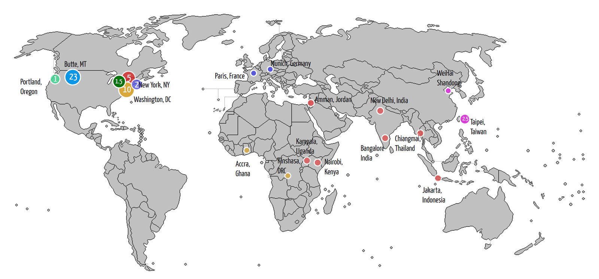

margiej12@gmail.com
margiej12@gmail.com
 202.251.0009
202.251.0009 RESUME
RESUME WORK SAMPLES
WORK SAMPLESMargie Joyce
Senior Learning & Design Strategist
Washington, DC

Places where I have work experience

My Journey
Meet Me in Montana
I spent half of my life living in Butte and studying in Missoula, Montana. Growing up in a large family in the Big Sky country undoubtably influences who I am, how I interact with others, and my design style.Learning through Travel
I spent most of my 20s getting outside of my comfort zone. I studied abroad in Burgandy and Paris, France. I volunteered in East Harlem, New York City. I studied Chinese in Shandong, China and eventually spent two years teaching English and designing hotel newsletters in Taipei, Taiwan. Teaching, traveling, and designing shaped the person I am today.Learning New Technologies
I transitioned from my travels in Asia to what was then called the Silicon Forest - Portland Oregon. The internet was still relatively new and transforming everything. Working in tech support, I took one course at Portland State University and I knew I wanted to study educational technology. George Mason Unviversity's new Masters program in Instrucitonal Design and Development hit the mark. Here I built a foundation in learning and design.TechnologY & International Development
An opportunity at the Academy for International Development in DC combined my love for travel, my passion to do good in the world, and my new found technology skills. I spent 5 years working on exciting USAID funded ICT-in-Education projects that took me to India, Jordan, Indonesia, Uganda and Kenya.learning & Consulting
By the mid-2000s, I was ready to give my passport a rest. I took an opportunity at Booz Allen Hamilton to work as a Senior Learning Strategist. I designed facilitator-led training, managed e-learning venders and collaborated with bright and ambituous colleagues.learning, Design & International development
By 2008, an opportunity to go back working on USAID-funded projects came my way. As part of a woman-owned, small business, I was able to hone my skills in not only in instructional design, but also HTML/CSS, user interface design and technical project managment. I've worked on projects focused on Gender Equality, Wildlife Crime, Water, Biodiversity, Sex Education, and Maternal and Child Health. During this time I also become a mother, a home owner and a pet owner.looking for new opportunities
My goal is to find new opportunities that use my skills, my experience, and enthusiasm. I would love to be part of a dynamic and innovative design team working to help solve some of the world's most pressing and difficult problems.
 WEB APPLICATION
WEB APPLICATION PROJECT
PROJECT  INSTRUCTIONAL
INSTRUCTIONAL COMMUNICATIONS/
COMMUNICATIONS/